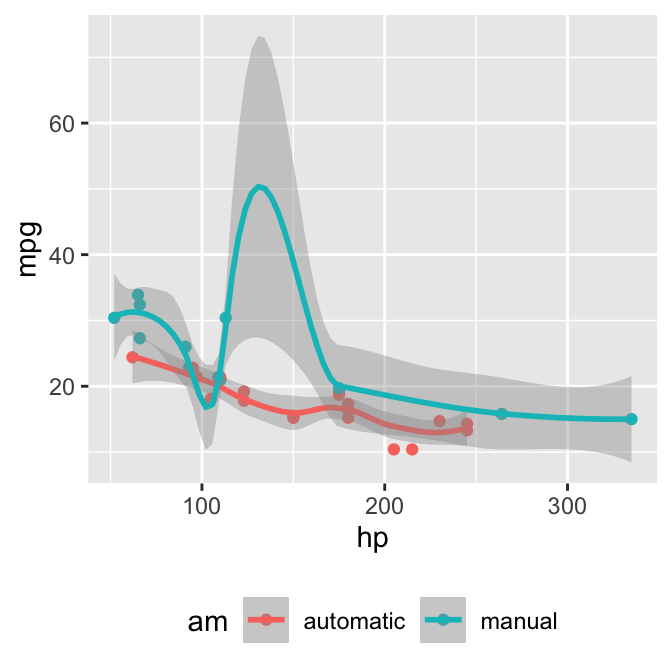
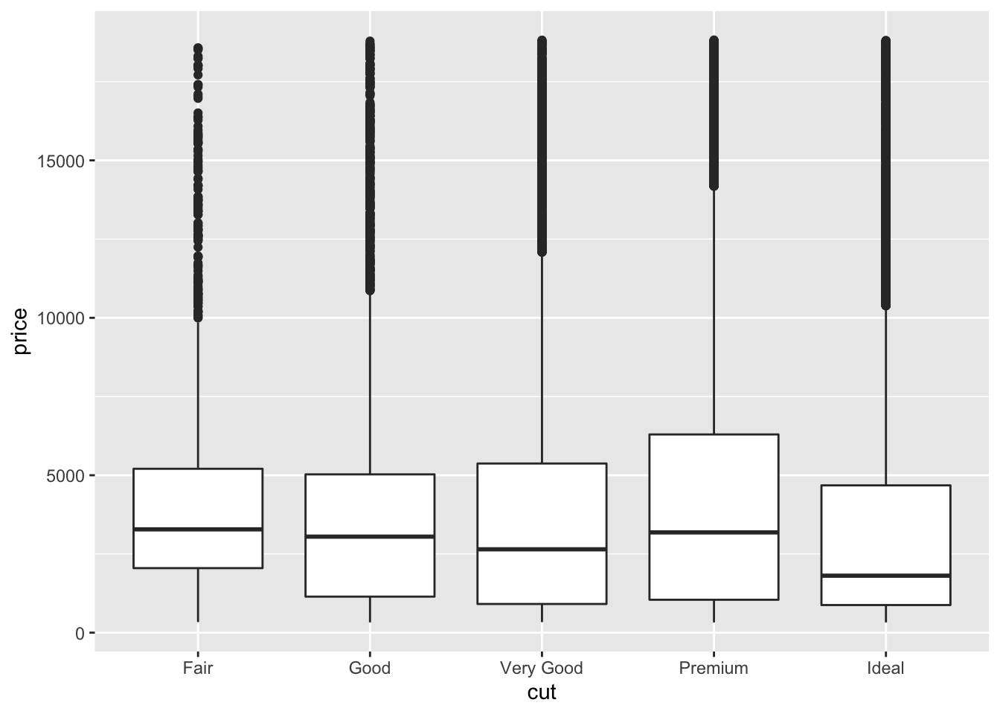

Tufte样式在Edward Tufte的书以及物理学家费曼的教科书很常见，它的一个显著特点就是边栏的使用。例如脚注和边栏注解，以及放在边栏里的小型插图。Tufte样式在LaTeX和HTML/CSS中都有实现1 参见Github库tufte-latex和 tufte-css。我们将这两种实现都纳入了tufte包。若需要LaTeX/PDF输出，使用输出格式tufte_handout即可，类似地，tufte_book可以用来输出PDF书，tufte_html生成HTML网页。这些输出格式可以在YAML元数据中指定，或者传给rmarkdown::render()函数。若对rmarkdown包不熟悉，可参见 Allaire et al. (2015Allaire, JJ, Joe Cheng, Yihui Xie, Jonathan McPherson, Winston Chang, Jeff Allen, Hadley Wickham, Aron Atkins, and Rob Hyndman. 2015. Rmarkdown: Dynamic Documents for R. http://rmarkdown.rstudio.com.)。
---
title: "一个Tufte样式示例"
author: "张三"
ctex: yes
output:
tufte::tufte_handout: default
tufte::tufte_html: default
---Tufte样式不主张太深的章节目录，一般仅仅使用一级标题（Markdown中用一个井号#）和二级标题（两个井号）。
插图在Tufte的书中非常常见，我们可以使用三种插图：边栏图、全宽图、主栏图。先说边栏图：使用knitr代码段选项fig.margin = TRUE即可将图形放置在边栏中，如：
 MPG与horsepower两个变量的散点图；颜色代表自动挡或手动挡。
library(ggplot2)
mtcars2 <- mtcars
mtcars2$am <- factor(
mtcars$am, labels = c('automatic', 'manual')
)
ggplot(mtcars2, aes(hp, mpg, color = am)) +
geom_point() + geom_smooth() +
theme(legend.position = 'bottom')注意我们使用代码段选项fig.cap设定了图的标题。当然我们也可以设置图的长宽。
事实上我们可以在边栏中放置除了图之外的内容，此时我们不再使用```{r}写代码段，而是用```{marginfigure}。例如右边有一个微积分第一基本定理。
根据微积分第一基本定理我们知道，对x ∈ [a, b]有
\[\frac{d}{dx}\left( \int_{a}^{x} f(u)\,du\right)=f(x).\]
为了文本内容的可移植性（同样的内容可以生成HTML和LaTeX文档），我们建议边栏中不要放置太复杂的内容，简单的加粗、倾斜都没有问题，但不建议在边栏中使用列表、参考文献等内容。
代码段选项fig.fullwidth = TRUE可以使得一幅图占用全部页宽，例如：
ggplot(diamonds, aes(carat, price)) + geom_smooth() +
facet_grid(~ cut)一幅全宽图形。
其它和图形有关的代码段选项仍然可以使用，一般情况下，全款图形的fig.width选项会较大，而fig.height相对较小。上图的尺寸是\(10 \times 2\)英寸.
默认情况下，R代码段生成的图形放置在主栏里，其标题放在边栏中，例如：
ggplot(diamonds, aes(cut, price)) + geom_boxplot()一幅主栏插图。
Tufte样式的文档中，脚注会被自动转换为边栏附注2 这里本来是一个脚注。脚注是带编号的，另一种边栏附注是不带编号的，这种附注需要用tufte包中的R函数margin_note()在knitr行内代码中生成。这是一个边栏附注，它没有编号。与边栏插图一样，边栏附注中我们也不建议写太复杂的内容，通常只是一句简单的文字。
HTML输出中，参考文献默认也放在边栏中。例如这里我们可以引用(R Core Team 2015R Core Team. 2015. R: A Language and Environment for Statistical Computing. Vienna, Austria: R Foundation for Statistical Computing. https://www.R-project.org/.)。这个功能需要在YAML元数据中设置link-citations: yes，而且pandoc-citeproc程序的版本应该至少是0.7.2。若这两个条件不满足，参考文献会被放在文档末尾。
我们可以用knitr包中的kable()函数生成简单的表格。HTML输出中表格的标题也会被放在边栏中。
knitr::kable(
mtcars[1:6, 1:6], caption = 'mtcars数据的前几行。'
)mtcars数据的前几行。
| mpg | cyl | disp | hp | drat | wt | |
|---|---|---|---|---|---|---|
| Mazda RX4 | 21.0 | 6 | 160 | 110 | 3.90 | 2.620 |
| Mazda RX4 Wag | 21.0 | 6 | 160 | 110 | 3.90 | 2.875 |
| Datsun 710 | 22.8 | 4 | 108 | 93 | 3.85 | 2.320 |
| Hornet 4 Drive | 21.4 | 6 | 258 | 110 | 3.08 | 3.215 |
| Hornet Sportabout | 18.7 | 8 | 360 | 175 | 3.15 | 3.440 |
| Valiant | 18.1 | 6 | 225 | 105 | 2.76 | 3.460 |
Markdown语法使用>来生成引文，如果需要在引文下面用行内代码以及quote_footer()函数加上一句引文来源，例如：
“多亏了我的律师，要不然我现在还在牢里。两个人一起挖确实比一个人快很多啊。”
如果不用这个函数的话，引文底部的话只是一个普通段落：
“伟人论道，凡人论事，小人论酒。”
— Fran Lebowitz
这个包生成的HTML页面是响应式的：如果页宽小于760像素，边栏内容会自动隐藏。此时我们可以点击脚注的序号显示它，其它边栏附注则可以通过点击圆圈加号的符号显示。
希望诸位喜欢R Markdown的超级简洁性，同时我们感谢Tufte-CSS和Tufte-LaTeX项目的作者们，没有他们的辛勤劳动，就没有这个tufte包。这份文档的R Markdown源文档可以在Github上找到，或者直接使用RStudio菜单File -> New File -> R Markdown -> From Template新建一个文档，或直接从R里面打开这个Rmd文件：
file.edit(
tufte:::template_resources(
'tufte_ctex', '..', 'skeleton', 'skeleton.Rmd'
)
)